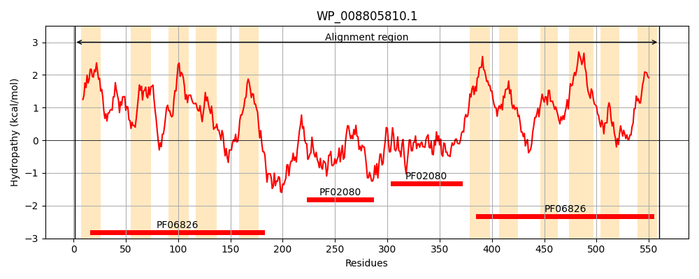
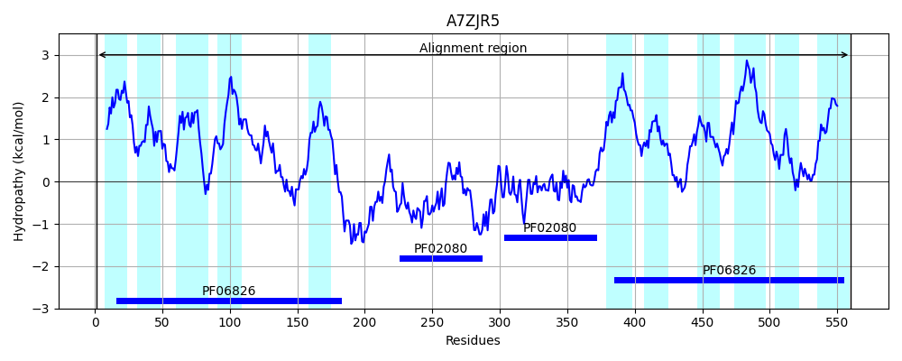
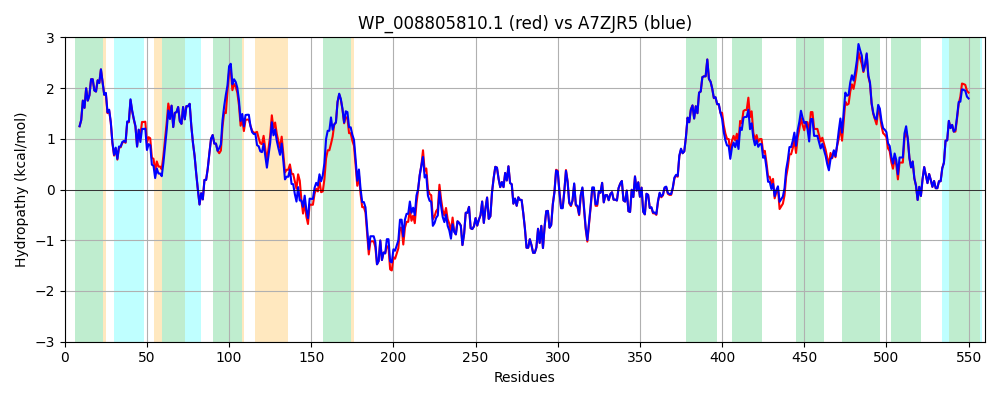

Hit Accession: A7ZJR5
Hit TCID: 2.A.81.1.4
Hit Description: gnl|BL_ORD_ID|751 gnl|TC-DB|A7ZJR5|2.A.81.1.4 Putative transport protein YbjL OS=Escherichia coli O139:H28 (strain E24377A / ETEC) GN=ybjL PE=3 SV=1
Mach Len: 560
e:0.000000
Query TMS Count : 11
Hit TMS Count: 11
TMS-Overlap Score: 9.500000
Predicted Substrates:None
BLAST Alignment:
Score: 2703 , Bit scores: 1045 bits, E-value: 0.0e+00, Alignment length: 560, Percentage identity: 93
Query: 1 MNINVADLLNGNYILLLFVVLALGLCLGKLRLGSVQLGNSIGVLVVSLLLGQQHFAINTDALNLGFMLFIFCVGVEAGPNFFSIFFRDGKNYLMLALVMVGSAMLIATVLGKVFGWDIGLTAGMLAGAMTSTPVLVGAGDTLRHFGLPSDQLAQSLDHLSLGYALTYLVGLVSLIVGARYMPKLQHQDLQTSAQQIARERGLDTDSKRKVYLPVIRAYRVGPELVAWADGKNLRELGIYRQTGCYIERIRRNGILANPDGDAVLQMGDDIALVGYPDAHARLDPSFRNGKEVFDRDLLDMRIVTEEIVVKNHNAVGRRLAQLKLTDHGCFLNRVIRSQIEMPIDDNVVLNKGDVLQVSGDARRVKTVADRIGFISIHSQVTDLLAFCAFFIVGLMIGMITFQFSSFSFGIGNAAGLLFAGIMLGFLRANHPTFGYIPQGALNMVKEFGLMVFMAGVGLSAGAGINNGLGAVGGQMLAAGLIVSLLPVVICFLFGAYVLRMNRAMLFGAMMGARTCAPAMEIISDTARSNIPALGYAGTYAIANVLLTLAGTLIVIIWPGL 560
MNINVA+LLNGNYILLLFVVLALGLCLGKLRLGS+QLGNSIGVLVVSLLLGQQHF+INTDALNLGFMLFIFCVGVEAGPNFFSIFFRDGKNYLMLALVMVGSA++IA LGK+FGWDIGLTAGMLAG+MTSTPVLVGAGDTLRHFG+ S QL+ +LD+LSLGYALTYL+GLVSLIVGARY+PKLQHQDLQTSAQQIARERGLDTD+ RKVYLPVIRAYRVGPELVAW DGKNLRELGIYRQTGCYIERIRRNGILANPDGDAVLQMGD+IALVGYPDAHARLDPSFRNGKEVFDRDLLDMRIVTEE+VVKNHNAVG+RLAQLKLTDHGCFLNRVIRSQIEMPIDDNVVLNKGDVLQVSGDARRVKT+ADRIGFISIHSQVTDLLAFCAFF++GLMIGMITFQFS+FSFG+GNAAGLLFAGIMLGF+RANHPTFGYIPQGAL+MVKEFGLMVFMAGVGLSAG+GINNGLGA+GGQML AGLIVSL+PVVICFLFGAYVLRMNRA+LFGAMMGARTCAPAMEIISDTARSNIPALGYAGTYAIANVLLTLAGT+IV++WPGL
Sbjct: 1 MNINVAELLNGNYILLLFVVLALGLCLGKLRLGSIQLGNSIGVLVVSLLLGQQHFSINTDALNLGFMLFIFCVGVEAGPNFFSIFFRDGKNYLMLALVMVGSALVIALGLGKLFGWDIGLTAGMLAGSMTSTPVLVGAGDTLRHFGMESRQLSLALDNLSLGYALTYLIGLVSLIVGARYLPKLQHQDLQTSAQQIARERGLDTDANRKVYLPVIRAYRVGPELVAWTDGKNLRELGIYRQTGCYIERIRRNGILANPDGDAVLQMGDEIALVGYPDAHARLDPSFRNGKEVFDRDLLDMRIVTEEVVVKNHNAVGKRLAQLKLTDHGCFLNRVIRSQIEMPIDDNVVLNKGDVLQVSGDARRVKTIADRIGFISIHSQVTDLLAFCAFFVIGLMIGMITFQFSTFSFGMGNAAGLLFAGIMLGFMRANHPTFGYIPQGALSMVKEFGLMVFMAGVGLSAGSGINNGLGAIGGQMLIAGLIVSLVPVVICFLFGAYVLRMNRALLFGAMMGARTCAPAMEIISDTARSNIPALGYAGTYAIANVLLTLAGTIIVMVWPGL 560 | Protein Hydropathy Plots: |
|---|
|  |  |
Pairwise Alignment-Hydropathy Plot:
|
|---|
|  |